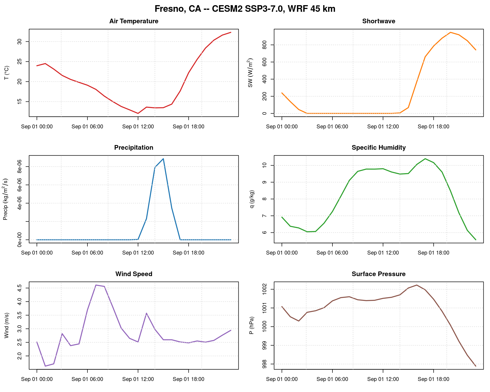

library(caladaptR)
sipnet_vars <- c("t2", "psfc", "prec", "q2", "swdnb", "u10", "v10")
var_data <- lapply(sipnet_vars, function(v) {
message("reading ", v)
ca_fetch(v, model = "CESM2", scenario = "ssp370", n_timesteps = 24)
})
names(var_data) <- sipnet_varsBuilding SIPNET Met Drivers from WRF Projections
What you will learn
- Which meteorological variables SIPNET requires and where they come from in the WRF dataset
- How WRF native units map to CF standard names and units
- How to download all 7 variables and write a CF-compliant NetCDF file
Background
SIPNET is a process-based ecosystem model that simulates carbon, water, and energy fluxes at hourly timesteps. It expects met drivers in CF-standard NetCDF format.
The Cal-Adapt WRF hourly output is a natural fit for SIPNET met forcing under future climate scenarios. This vignette walks through the pipeline: query the catalog, read all variables, convert units, and write a NetCDF.
Variable mapping
SIPNET needs 5 meteorological inputs plus wind components:
| CF standard name | WRF name | WRF units | CF units | Conversion |
|---|---|---|---|---|
air_temperature |
t2 |
K | K | none |
air_pressure |
psfc |
Pa | Pa | none |
precipitation_flux |
prec |
mm/timestep | kg/m2/s | divide by dt |
specific_humidity |
q2 |
kg/kg (mixing ratio) | kg/kg (specific) | q = w/(1+w) |
surface_downwelling_shortwave_flux_in_air |
swdnb |
W/m2 | W/m2 | none |
eastward_wind |
u10 |
m/s | m/s | none |
northward_wind |
v10 |
m/s | m/s | none |
Most need no conversion. Precipitation goes from accumulated mm per timestep to an instantaneous flux rate (dividing by 3600 for hourly data). Humidity goes from mixing ratio to specific humidity – the difference is small but worth getting right.
Download all variables
Inspect the data
Always spot-check that values fall in physically reasonable ranges before feeding them to an ecosystem model.
# temperature: 200--350 K
summary(var_data$t2[[1]])
# pressure: 50000--110000 Pa
summary(var_data$psfc[[1]])
# shortwave: 0--1400 W/m2
summary(var_data$swdnb[[1]])
Sanity checks
WRF output is model output, not observations. Temperature below 200 K, negative shortwave, or negative pressure indicate a data problem – don’t pass those through to the model.
Write CF-standard NetCDF
ca_write_cf_netcdf() handles unit conversion and CF metadata in one call:
ca_write_cf_netcdf(
var_list = var_data,
outfile = "CESM2.ssp370.2014-09-01.cf.nc",
dt_seconds = 3600,
overwrite = TRUE
)The output includes CF-1.8 global attributes, standard variable names, and computed wind speed. The output is ready for SIPNET ensemble runs.
Point extraction alternative
For single-site runs, extract time series at a specific location instead of writing the full grid:
pts <- lapply(sipnet_vars, function(v) {
ca_fetch_point(v, model = "CESM2", scenario = "ssp370",
lon = -119.77, lat = 36.75, n_timesteps = 24)
})
names(pts) <- sipnet_vars
References
- Rahimi, S. et al. (2024). An overview of the Western United States Dynamically Downscaled Dataset (WUS-D3). Geoscientific Model Development, 17, 2265–2286. doi:10.5194/gmd-17-2265-2024
- Dietze, M. C. et al. (2014). A quantitative assessment of a terrestrial biosphere model’s data needs across North American biomes.